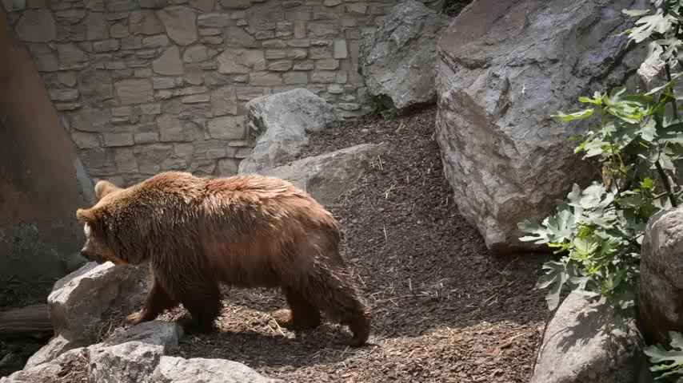

Clip: bear_1 (wan) · prompt: "a brown bear walks to the left" · 49 frames, 50 steps · same first frame + prompt, only the conditioning tracks differ
First frame (input)

conditions below: generated result + its conditioning tracking video
M — MolmoMotion tracks
conditioning
E3 — 3D constant-velocity extrapolation
conditioning
L2 — 2D const-velocity + frozen depth
conditioning